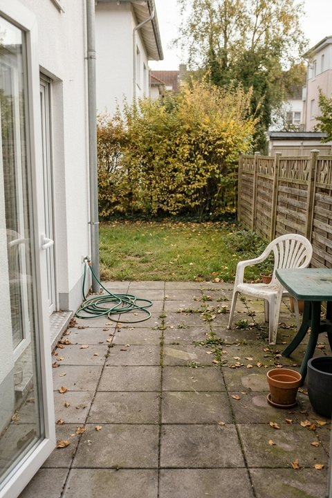
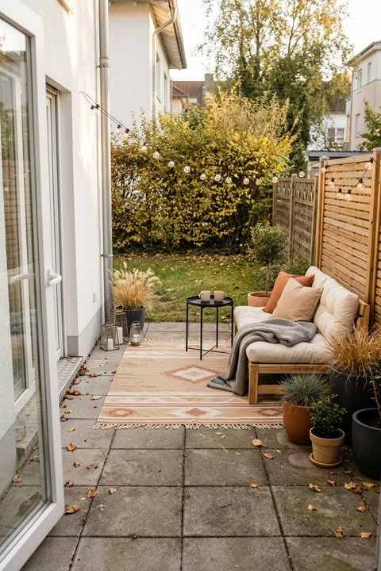

Terrasse vorher/nachher: gemütlich in 7 Schritten


Eine typische kleine Terrasse an der Erdgeschosswohnung: rund 3 × 2,5 m Betonplatten, Moos in den Fugen, ein Plastikstuhl. Mit sieben Schritten wird daraus ein Platz, an dem man vom Frühling bis in den Oktober draußen sitzt. Die Spar-Version kostet unter 250 €.
Zur Einkaufsliste & den Kosten ↓
Die 7 Schritte
1. Fugen säubern
Moos und Unkraut mit einem Fugenkratzer entfernen, die Platten mit Schrubber und Wasser reinigen. Kostet fast nichts und macht die Terrasse sofort heller.
ca. 5–15 €
2. Ein großer Outdoor-Teppich
Er grenzt die Sitzecke ab und deckt die Betonplatten ab. Für eine kleine Terrasse passt etwa 160 × 230 cm.
ca. 40–80 €
3. Ein niedriges Loungesofa
Eine Holz-Loungebank mit dicken Auflagen wirkt viel gemütlicher als Stühle. Günstige Variante: aus zwei Paletten selbst bauen und Palettenkissen darauflegen.
ca. 80–250 €
4. Beistelltisch und Decke
Ein kleiner runder Metalltisch für Getränke und eine Strickdecke für kühle Abende.
ca. 30–60 €
5. Große Pflanzkübel
Zwei große Kübel mit Ziergras und einem kleinen Strauch geben der Terrasse Höhe und trennen sie vom Rasen. Lieber wenige große als viele kleine Töpfe.
ca. 60–120 €
6. Sichtschutz aus Holz
Ein Holzelement (ca. 180 × 180 cm) an der Seite zum Nachbarn schirmt Blicke ab. Im Topf mit Bodenhülse oder an einem Pfosten befestigen – vorher mit dem Vermieter klären.
ca. 40–90 €
7. Lichterkette und Laternen
Eine Lichterkette mit großen Birnen von der Hauswand zu einem Pfosten gespannt, dazu zwei, drei Laternen auf den Platten.
ca. 30–60 €
Einkaufsliste
| Was | Menge | ca. Preis |
|---|---|---|
| Fugenkratzer + Schrubber | 1 | 5–15 € |
| Outdoor-Teppich, ca. 160 × 230 cm | 1 | 40–80 € |
| Loungebank Holz + Auflagen | 1 | 80–250 € |
| Beistelltisch Metall + Strickdecke | 2 | 30–60 € |
| Große Kübel + Gräser/Strauch | 2 | 60–120 € |
| Holz-Sichtschutzelement | 1 | 40–90 € |
| Lichterkette + Laternen | 1 + 3 | 30–60 € |
Richtwerte für Deutschland, Stand November 2026. Die Preise schwanken je nach Händler und Saison.
Was kostet das Makeover?
Spar-Version – unter 250 €: Fugen säubern, Teppich, Palettensofa, Lichterkette.
Komplett wie auf dem Bild – ca. 285–675 €: alles aus der Einkaufsliste.
Tipp: Gartenmöbel sind im Herbst und Winter oft stark reduziert. Wer jetzt kauft, sitzt im Frühling günstiger.
Häufige Fragen
Was mache ich mit den Möbeln im Winter?
Holzmöbel abdecken oder in den Keller stellen, Auflagen und Teppich trocken lagern.
Und auf dem Balkon?
Die gleichen Ideen in klein: Kleiner Balkon vorher/nachher.